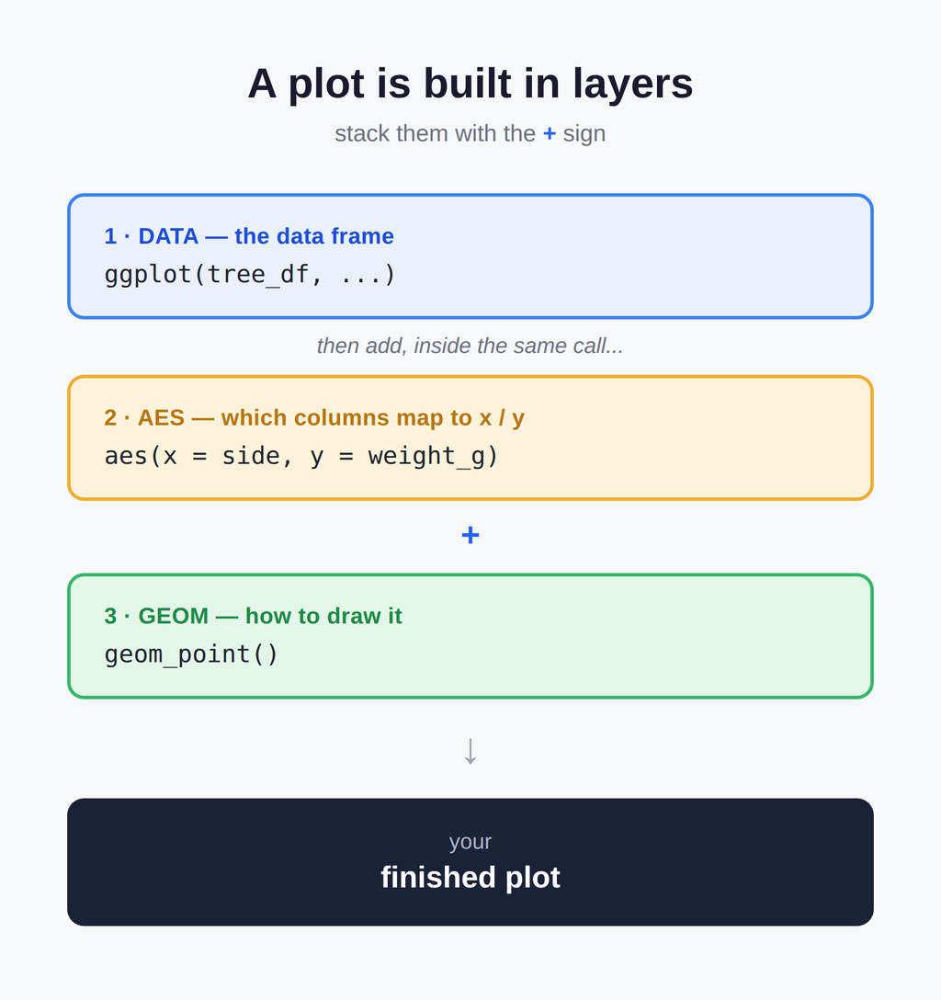
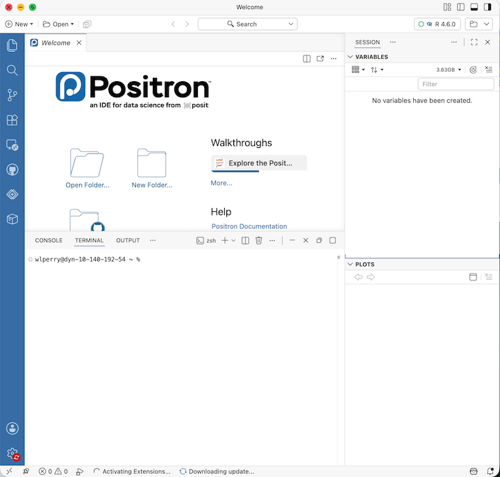
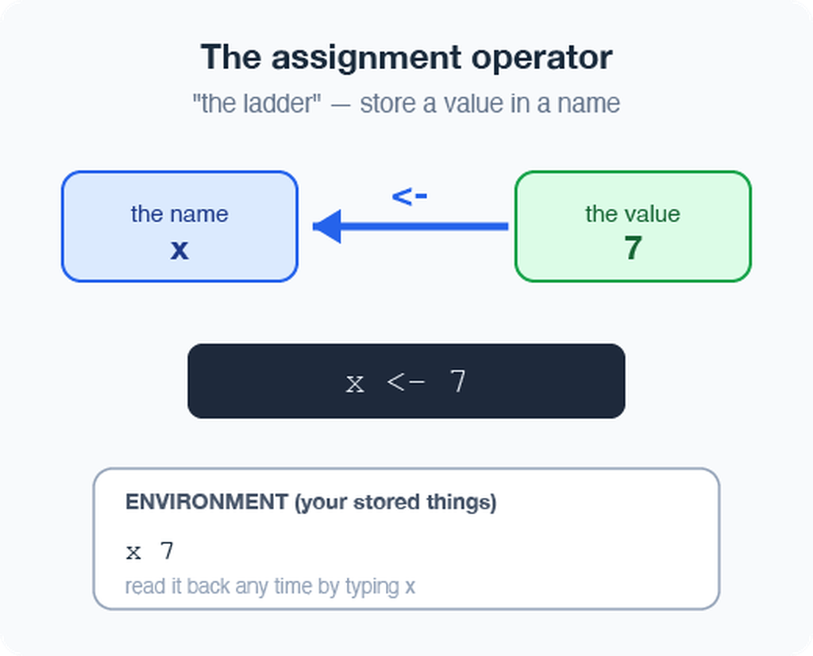
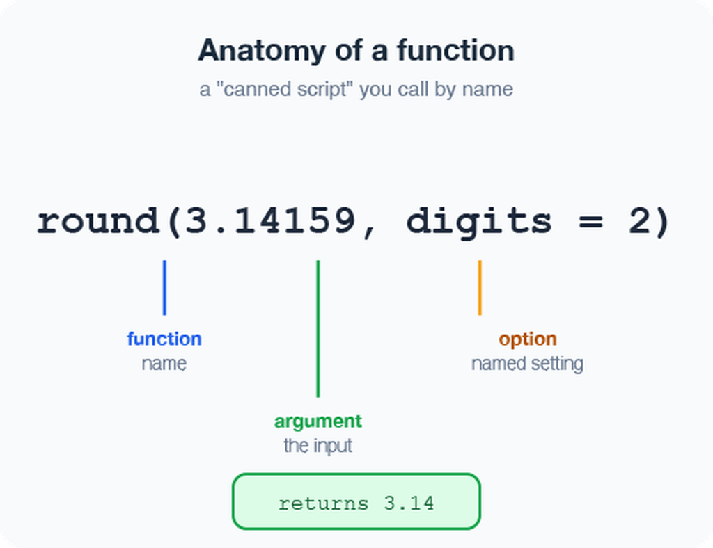
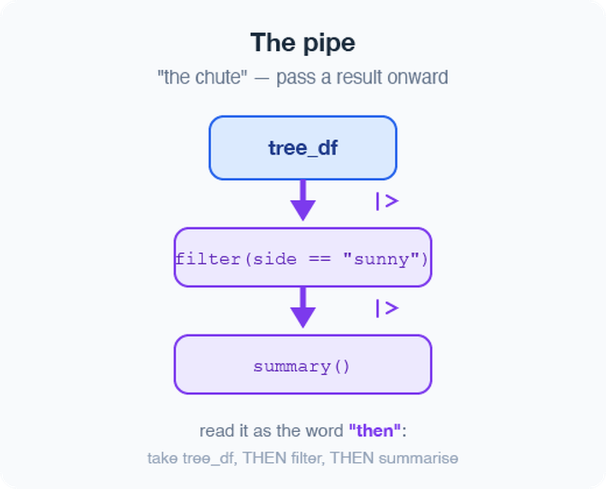
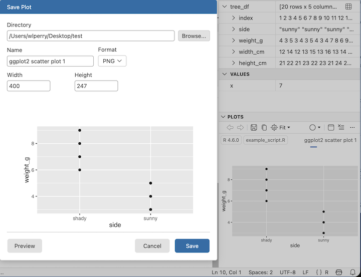

Lecture 02 — Meeting R
From the console to your first plot
Where we left off (Lecture 01)
- Science fundamentals — falsifiable predictions; null vs. alternate hypotheses
- Our class project — leaf morphology: sunny vs. shady sides of trees
- Design — randomization, replication (multiple trees), sampling limits
- Variables — dependent (leaf mass/size) vs. independent (side of tree)
- Spreadsheet hygiene — metadata, consistent column names, units, clean sheet design
- Installed R and Positron before today
✅ Key idea
Today we take that tidy spreadsheet and bring it to life in R.
Goals for today
- Get R and Positron oriented — the four panes
- Organize a project so future-you can find things
- Learn how R actually works:
- using it as a calculator
- storing things with
<-the assignment operator - alligator eats the minus sign… - values, vectors, and data types
- writing a script
- Load our tree data and make a first plot
🖐 Try it yourself
By the end you will run real code on our leaf data — not a toy dataset.

Part 1 · Setting up
What is R, really?
- R is the engine — a free language for data and statistics
- We drive that engine through an IDE (a code editor)
- Two good IDEs — you may try both:
- Positron — what we use (recommended)
- RStudio — the long-time classic
📖 New word
IDE = Integrated Development Environment. Think of R as the car engine and the IDE as the seat, wheel, and dashboard.

Organize the project before you code
Make one folder per project. Everything for the tree experiment lives together:
tree_project/
├── data/ ← your Excel and CSV files
├── scripts/ ← your .R code files
└── figures/ ← plots you save- In Positron: File → Open Folder… and pick this folder
- Every path is then relative to the project — no more
C:/Users/.../Desktop/...nightmares
✅ Key idea
A tidy folder today saves an hour of “where did I put that file?” next week.
📊 Coming from Excel?
- In Excel you keep one big file and it can be hard to figure out what was done and how
- In R we keep raw data untouched and
- write new processed files
- — so you can always trace your steps and never overwrite your original numbers
- write new processed files
A quick tour of Positron
Four panes you will use constantly:
- Editor (top-left) — your scripts live here when you have a script open
- Console / Terminal (bottom) — where code runs
- Variables / Session (right) — everything you have stored
- Plots (right) — your figures appear here
🖐 Try it yourself
- Find each pane on your screen now.
- Click the Console tab — that is where we start next.
Part 2 · How R works
R is a calculator
Type math straight into the console and press Enter:
3 + 5
12 / 7
2 ^ 10R answers immediately. The console is great for quick “what is the answer?” questions.
⚠️ Watch out!
A + at the start of the console line means R is still waiting for you to finish a command. Press Esc to start over.
📊 Coming from Excel?
This is just like typing =3+5 into an Excel cell — except there are no cells, just a line you type and run.
Storing values with <- assignment operator - alligators eats minus sign
To keep a value, give it a name with the assignment operator <-:
x <- 7 # store 7 under the name x
x # type the name to read it back
x * 2 # use it in math<-puts the value into your environment (look in the Variables pane!)- Shortcut: Alt + - (Win) or Option + - (Mac) types
<-for you
📖 New word
Assignment operator <- “puts the thing on right and stores it in the name on left.” not always the same as =

Naming your objects well
Good names make code readable months later:
- Be explicit, not too long:
leaf_mass, notx2 - Cannot start with a number —
x2✅,2x❌ - R is case-sensitive —
weight_g≠Weight_g - Use
lower_snake_case— words separated by underscores
leaf_mass <- c(4, 3, 5, 7) # good
LeafMass <- c(4, 3, 5, 7) # works but avoid
leaf.mass <- c(4, 3, 5, 7) # avoid dots⚠️ Watch out!
weight_g and weight_G are two different objects. Pick one style and stick with it. I URGE you to use lower case and _
📖 New word
Object (R) = variable (Excel/other languages). Same idea: a named container that holds something.
- Our naming convention throughout this course:
- data frames →
_df- plots →
_plot- models →
_model
Leave notes with comments #
Anything to the right of # is ignored by R — it is a note for humans:
# weights of four leaves, in grams
leaf_mass <- c(4, 3, 5, 7)
mean(leaf_mass) # average leaf mass- Comment generously — your future self will thank you
- Shortcut to toggle: Ctrl/Cmd + Shift + C
✅ Key idea
If a line confused you while writing it, comment why you did it.
📊 Coming from Excel?
Comments are like the notes you scribble in a cell — but they never get in the way of the numbers or the code.
Functions and their arguments
A function is a canned script you call by name. You feed it arguments (inputs); it returns a result:
sqrt(10) # one argument
round(3.14159) # default: 0 digits → 3
round(3.14159, 2) # two digits → 3.14
round(x = 3.14159, digits = 2) # named argumentsStuck on a function?
?round # open the help page
args(round) # what arguments does it take?📖 New word
Argument = an input you hand to a function inside its ( ).

Vectors — a row of values
A vector is a series of values built with c() (“combine”) or concatenated list:
weight_g <- c(4, 3, 5, 7) # numbers
side <- c("sunny", "shady") # text needs quotesInspect any vector:
length(weight_g) # how many values?
class(weight_g) # what type?
str(weight_g) # quick structure overview⚠️ Watch out!
Quotes matter: "sunny" is text. Without quotes, R hunts for an object named sunny and errors when it cannot find one.
✅ Key idea
A vector is the workhorse of R. A spreadsheet column is really just a vector.
Data types live inside vectors
Every vector holds one type:
numeric—4,3.5character—"sunny"logical—TRUE/FALSE
Mix types and R quietly coerces them all to one:
c(1, 2, 3, "a") # all become character
c(1, 2, 3, TRUE) # TRUE becomes 1
class(c(1, 2, 3, "a"))📖 New word
Coercion = R automatically converting everything in a vector to a single shared type.

Part 3 · From console to script
Do not retype — use a script
The console forgets.
A script (.R file) remembers and re-runs.
- File → New File → R File opens a blank script
- Type your commands, one per line
- Put the cursor on a line and press Ctrl/Cmd + Enter to run it
- Save with Ctrl/Cmd + S — reopen later and re-run everything
x <- 7
y <- 5
x + y✅ Key idea
- Console = scratch paper.
- Script = the lab notebook you keep.

Packages — extending what R can do
Like apps for your phone, packages add new abilities to R.
Install once — downloads to your computer (do this in the Console, not in your script):
install.packages("tidyverse")
install.packages("readxl")Load every session — activates it for today (put this at the top of every script):
library(tidyverse) # data wrangling + plotting
library(readxl) # read Excel files⚠️ Watch out!
If R says “could not find function read_excel”, you forgot the library(readxl) line.
📖 New words
Package = the installed toolbox (install once).
Library = loading that toolbox into today’s session (every session).
Part 4 · Loading our data
Two functions for two file types
Put your files in the project’s data/ folder, then:
library(tidyverse)
library(readxl)
# Excel files (.xlsx)
tree_df <- read_excel("data/2026_06_25_tree_experiment_raw_data.xlsx")
# CSV files (.csv) — used by NOAA, iNaturalist, many databases
noaa_df <- read_csv("data/noaa_global_yearly_temps.csv")✅ Key idea
read_excel() needs library(readxl). read_csv() comes with library(tidyverse) — no extra install needed.
📊 Coming from Excel?
read_excel() and read_csv() are the bridge from your file into R. Your file’s first row becomes the column names in R.
Meet the data frame
A data frame is a table: each column is a vector of one type, and the rows line up.
Our tree_df has five columns:
index— leaf number (numeric)side—"sunny"/"shady"(character)weight_g,width_cm,height_cm(numeric)
Pull a single column with $:
tree_df$weight_g # just the weights, as a vector📖 New word
Data frame = R’s word for a spreadsheet-style table.

Look at your data before trusting it
Always eyeball a new data frame:
head(tree_df) # first 6 rows
tail(tree_df) # last 6 rows
dim(tree_df) # rows, columns → 20 5
names(tree_df) # column names
# Tidyverse-style structure check (prefer this over str):
glimpse(tree_df) # one line per column: name, type, first values
# Base R equivalent:
str(tree_df) # same information, different layout🖐 Try it yourself
Run glimpse(tree_df). How many rows? What type is side?
✅ Key idea
Check dim() and glimpse() every single time you load data. Typos and wrong column types hide here.
⚠️ Watch out!
If a number column shows as <chr>, a stray letter or comma snuck into your spreadsheet.
The pipe %>% — read it as “then”
The pipe sends a result straight into the next function. Read %>% as the word “then”:
# Start with simple examples:
tree_df %>% nrow() # take tree_df, THEN count rows
tree_df %>% names() # take tree_df, THEN list column names
tree_df %>% summary() # take tree_df, THEN summarize
# Chain two steps:
tree_df %>%
head(3) # take tree_df, THEN show first 3 rowsIn Lecture 03 we will chain more steps together.
📖 New word
Pipe %>% = “take what is on the left and feed it to the function on the right.”

Two pipes — same idea:
%>%— from tidyverse (we use this one)|>— built into R 4.1+ (the “native pipe”)- They behave identically for everything in this course.
Part 5 · Your first plot
ggplot: build a picture in layers
Plots are built from three core pieces, joined with +:
ggplot(tree_df, aes(x = side, y = weight_g))- data — which data frame (
tree_df) - aes — which columns map to x and y
- geom — how to draw it (add with
+)
ggplot(tree_df, aes(x = side, y = weight_g)) +
geom_point()⚠️ Watch out!
- The
+must sit at the end of a line, never the start. +at the start = error- AND YES - Totally confusing to have %>% for code and + for plots - but its the way it is….
Improve it one layer at a time
Since side is a category, a boxplot with the raw points on top tells the story well:
ggplot(tree_df, aes(x = side, y = weight_g)) +
geom_boxplot() +
geom_jitter(width = 0.15, alpha = 0.6, color = "tomato") +
labs(x = "Side of tree",
y = "Leaf weight (g)",
title = "Sunny vs. shady leaves")🖐 Try it yourself
Swap weight_g for height_cm. What changes? Try geom_violin() instead of geom_boxplot().
CAN YOU DRAW A SKETCH OF WHAT THIS MIGHT LOOK LIKE???
Save your plot and your script
Store the plot in an object, then save it as a PNG:
leaf_plot <- ggplot(tree_df, aes(x = side, y = weight_g)) +
geom_boxplot()
# Save to the figures/ folder — always use PNG, dpi = 300
ggsave("figures/leaf_weight.png",
plot = leaf_plot,
width = 6,
height = 6,
units = "in",
dpi = 300)- 📖 File format tip
- Save figures as PNG (
.png) for reports and Canvas submissions. dpi = 300means 300 dots per inch — high enough for print and posters.
⚠️ Watch out!
ggsave() wants the filename first, then plot =. Also: dpi = 300 is publication quality — always use it.

Wrap-up · What you can now do
- Set up R + Positron and organize a project folder
- Use R as a calculator and store values with
<- - Write and run a script, with
#comments - Call functions and read their help with
? - Build vectors, know their types
- Load Excel and CSV data with
read_excel()andread_csv() - Inspect a data frame with
glimpse(),head(),dim() - Use the pipe
%>%to chain steps - Make and save a first
ggplotas a PNG
🖐 Before next class
Load tree_df, run glimpse(), and make one plot of width_cm by side. Save it to figures/.
✅ Key idea
You went from a blank console to a saved figure of our data. That is the whole workflow in miniature.
Up next — Lecture 03:
filter()— pick rowsselect()— pick columnsmutate()— create new columnsarrange()— sort rows- Then: descriptive statistics on our leaf data
Getting unstuck
When code breaks (it will — that is normal):
?function_name— the built-in help page- Read the error message out loud; it usually names the line
- Check: did you load
library(tidyverse)andlibrary(readxl)? - Check: spelling? A missing
)or+? - The posit/tidyverse cheatsheets are excellent: posit.co/resources/cheatsheets
- Bring the exact error (copy-paste it) to class or office hours
✅ Key idea
Every coder googles error messages daily. Getting stuck is not failing — it is the job.
📊 Coming from Excel?
In Excel you fix errors by clicking around. In R you fix them by reading the message and editing one line. Slower at first, far more powerful soon.